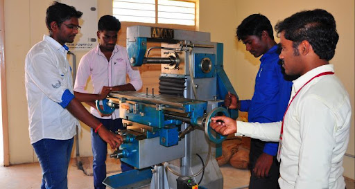
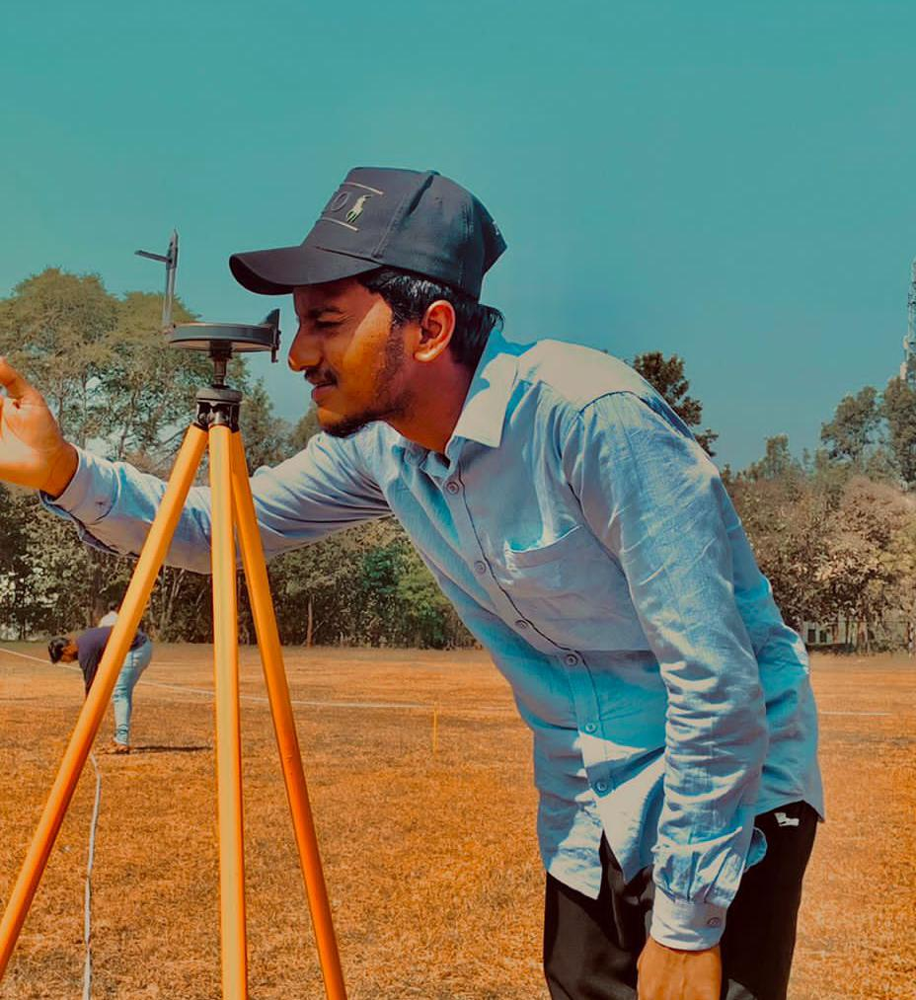
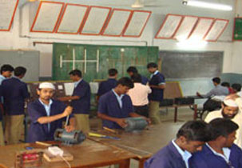
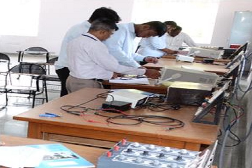

MECHANICAL ENGINEERING

The Mechanical Engineering Department was one of the First Departments to be started in this Institution in 1980. The Department offers UG, PG, MSc Engineering (By Research) and Ph.D. programmes.The Mechanical Engineering Association was started in the year 1995. It has well established Departmental Library since 1996 and has adequate number of useful books. The university has recognized the department as Research Centre for awarding Ph.D. and M.Sc. Engg. by research. A total number of 24 research scholars are undergoing Ph.D. programme in the Research Centre. The Department received Rs 11.5/- lakhs grant from AICTE towards “Modernization of Design Laboratory” during the year 2013. Rs. 15.5 Lakhs have been sanctioned by AICTE for carrying out R & D Projects at our R & D Centre during 2012-2014. Also the department is conducting Workshops, Seminars, Faculty development programs for the benefits of students, Research Scholar and faculty members.
CIVIL ENGINEERING

The department of Civil Engineering was established in the year 1980 with a students’ intake of 60. The intake was increased to 120 from academic year 2012-13. It is headed by Dr. Nanjundaswamy Sateesh Kumar., who serving this institution from the past 30 years.
The department has Research Centre since 2010, where 14 candidates are pursuing Ph.D., It also has M.E degree course in Structural Engineering since 2011.
·The department has teaching staff members comprising of 04 doctorates, and rest post graduates. 07 of the staff members are working in this institution from the past over 25 years. There are 07 supporting staff members. The present students’ strength is 462 including about 103 girls.
· It has bagged FIVE university ranks.
The department submitted 16 project proposals for funding of which 07 projects worth Rs 97.0712 Lakhs received sanction.
· It has obtained and executed 02 R&D projects worth Rs. 19.78 lakhs, 02 MODROBS projects worth Rs. 13.16 lakhs, about 15 KSCST students’ projects worth Rs. 1.0 lakh. 02 R&D projects worth Rs 55.9512 lakh are under progress.
ELECTRONICS ENGINEERING

The department of Electronics and Communication Engineering at Ghousia College of Engineering was started during the year 1985, and has an intake of 120 students every year. The B.E program is approved by AICTE and Government of Karnataka,and affiliated to Visvesvaraya Technological University (VTU), Belgaum, accredited by NBA. The main aim of the department is to provide the quality education in the field of Electronics and Communication Engineering, as the global scene is exposed to new & Recent emerging technologies especially in Communication, VLSI subsystems and embedded technologies. The 21st century is the century of knowledge and technical shifts. The paradigm shift in technology is the growing need of learners and the society in particular. Hence the Management of Ghousia Industrial and Engineering Trust rightly decided to expose the changes, the society of today is made to acquaint.
COMPUTER SCIENCE ENGINEERING
 The Department of Computer science and engineering started in the year 1986, with the total intake of 60 students, now the intake has been increased to 90. The department has dedicated teaching and non teaching faculty.
The present students’ strength is about 283. The department has been accredited twice by National Board of Accreditation (NBA), New Delhi. The department has eight separate computer laboratories, well equipped with modern computers, printers, scanners and UPS. The department library has good collection of prescribed books.Our graduates will develop skill and ability to function with a sound foundation in engineering fundamentals necessary to adapt and contribute to new technologies in support of IT infrastructure, and also succeed in their career and/or obtain an advanced degree.
The faculty members of the department have published research papers, in several reputed international journals, conferences and in national conference held at different places.
The Department of Computer science and engineering started in the year 1986, with the total intake of 60 students, now the intake has been increased to 90. The department has dedicated teaching and non teaching faculty.
The present students’ strength is about 283. The department has been accredited twice by National Board of Accreditation (NBA), New Delhi. The department has eight separate computer laboratories, well equipped with modern computers, printers, scanners and UPS. The department library has good collection of prescribed books.Our graduates will develop skill and ability to function with a sound foundation in engineering fundamentals necessary to adapt and contribute to new technologies in support of IT infrastructure, and also succeed in their career and/or obtain an advanced degree.
The faculty members of the department have published research papers, in several reputed international journals, conferences and in national conference held at different places.
ELECTRICAL & ELECTRONICS ENGINEERING

The department of Electrical & Electronics Engineering was established in the year 1985 and is headed by experienced, dedicated and highly qualified faculty Dr. Mohamed Zahed Ahmed Ansari. The department has well qualified; passionate and dedicated staff, most of who are engaged in path breaking research and development. With a current annual intake of 60 students from all parts of India. The fast changing technological scenario poses to the department a challenge of continuously updating its curriculum and faculty to be able to provide state-of-the-art education to the students.The state of the art infrastructural facilities have been established at par with the university requirement to cater to the needs of students of the department. The department offers the programmes leading to under-graduate (UG) and post-graduate (PG) courses in Power System Engineering along with M.Sc. Engg., by Research, and Doctoral Program in the diversified field of Electrical & Electronics Engineering.